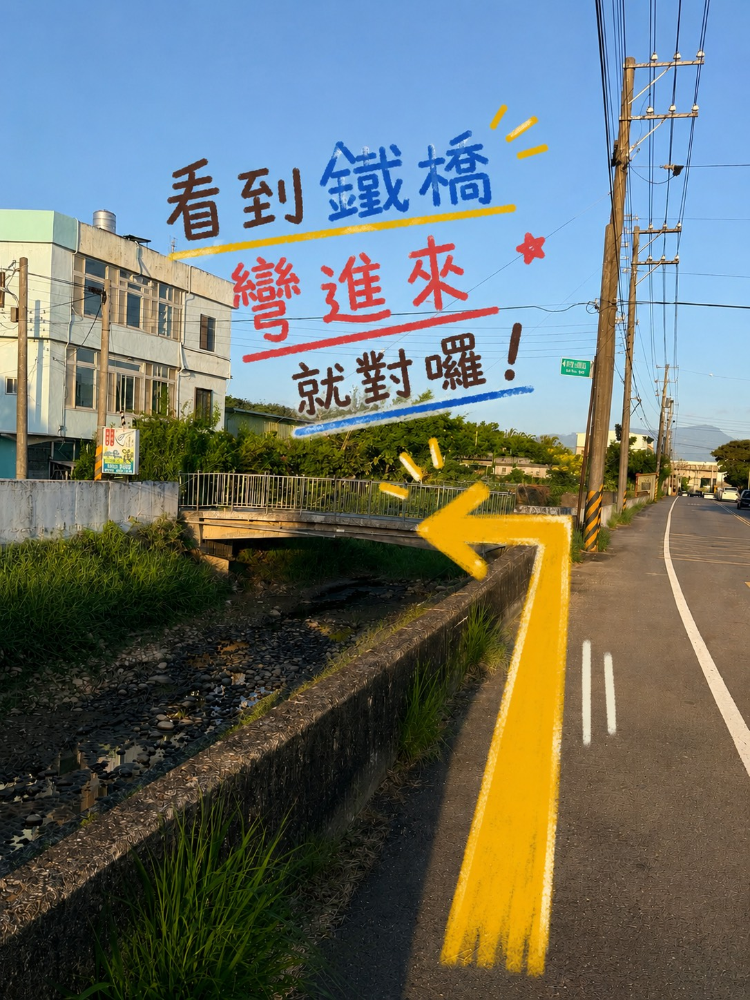
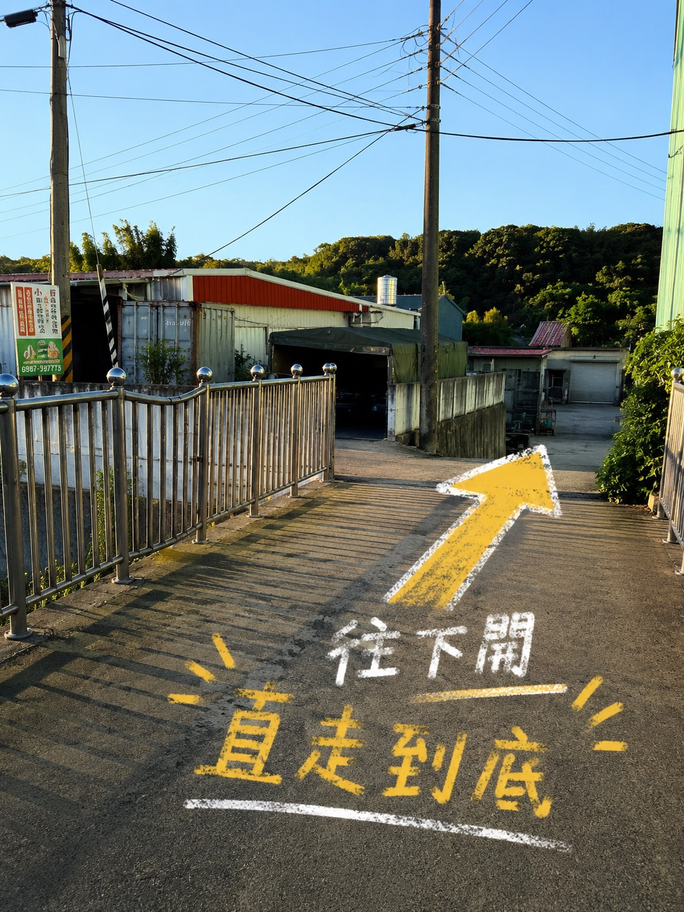
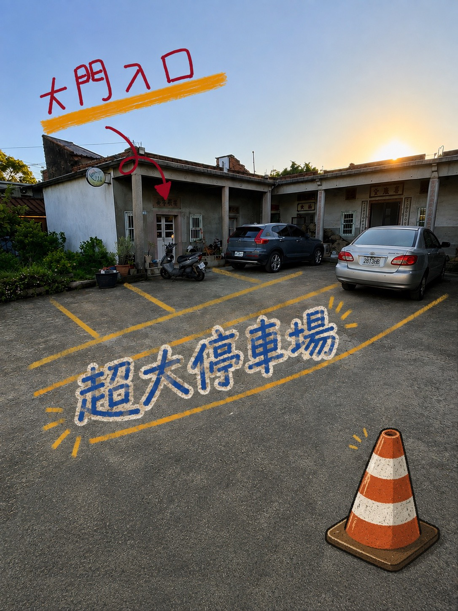

宇魚水族交通與來店指南
不論從台灣哪裡出發，這裡都整理好國道交流道、Google Maps導航、入口辨識、停車動線、營業時間與挑魚前提醒，讓你從下交流道到抵達三合院都更安心。
店址、導航與營業時間
- 店址新竹縣新埔鎮義民路二段630巷9號（三合院內）
- 電話0987-397-773
- 星期三、五18:00－21:00
- 星期六、日12:00－20:00
- 固定店休每週一、二、四
- 特殊店休出發前請先查看首頁最新公告
開車來店與國道路線
多數客人會開車來店。下交流道後，請以 Google Maps 搜尋「宇魚水族」並依即時路況行駛；接近店址時，再對照下方三張入口與停車導引圖。
台北、桃園方向走湖口交流道
由湖口交流道（83公里）下，依導航往新埔／義民廟方向行駛，再前往義民路二段。
台中、苗栗方向走竹北交流道
由竹北交流道（91公里）下，選擇往竹北／芎林方向，再依導航往新埔、義民路方向前進。
台北、桃園方向走關西交流道
由關西交流道（79公里）下，依導航沿118縣道往新埔方向，再前往義民路二段。
台中、苗栗方向可轉國道1號
在新竹系統交流道轉國道1號北上，再由竹北交流道下；轉接後依導航前往宇魚水族。
交流道名稱與里程參考：交通部高速公路局國道1號交流道資料、國道3號交流道資料。
最後一段路：入口與停車圖解
抵達義民路二段附近後，依照圖片順序行駛。

檔名：visit-entrance.jpg

檔名：visit-parking.jpg

檔名：visit-courtyard.jpg
第一次來店，照這四步最簡單
- 先確認營業時間與特殊店休
出發前查看首頁公告；若想看特定魚種，可先用 LINE 詢問當日魚況。 - 使用 Google Maps 導航
目的地設定「宇魚水族」，抵達義民路二段630巷附近後留意三合院入口。 - 準備魚缸資訊
如果是來詢問飼養問題，可以先拍下魚缸、過濾器與現有魚隻，並記下魚缸尺寸。 - 慢慢挑選，不需要有壓力
宇魚會先了解空間、預算與飼養經驗，再一起確認適合的魚隻與設備。
來店前可以準備什麼？
第一次準備養魚
- 預計放魚缸的位置照片
- 可以擺放的長、寬、高
- 預計飼養的魚種
- 大概的設備與活體預算
已經有魚缸或遇到問題
- 魚缸與過濾設備照片
- 魚缸尺寸與開缸時間
- 目前魚種與數量
- 換水、餵食及異常狀況
不確定資料夠不夠也沒關係。帶著現有照片與你最想解決的問題來，就能從最重要的地方開始。
現場主要可以看什麼？
用品與服務
水族飼料、濾材、實用周邊、魚缸設備，以及新手飼養諮詢、魚缸客製與到府安裝。現場會依實際需要協助評估，不必一開始就把所有設備買齊。
帶小孩或寵物一起來
宇魚位在新埔的傳統三合院內，店裡也有公關店長島輝與可愛的鴨鴨。歡迎家長帶小朋友認識水族生命，也歡迎帶狗狗或貓咪同行。
為了所有動物與來客的安全，同行寵物請由飼主全程照顧；看到其他動物時，請先保持適當距離並觀察彼此狀況。
來店常見問題
第一次來宇魚水族需要預約嗎？
可依官網公告的營業時間安排來店；若想挑選特定魚種，建議出發前先透過官方 LINE 詢問當日魚況與庫存。
完全沒有養魚經驗也可以來嗎？
可以。建議帶著預計擺放魚缸的空間照片、尺寸與預算來店，宇魚會先協助評估適合的魚缸與飼養方式。
可以只詢問問題，不一定要買東西嗎？
可以。若家裡魚缸遇到水質、病魚或設備問題，準備清楚的照片與基本資料，會更容易一起判斷。
可以帶狗狗或貓咪一起來嗎？
可以。宇魚是寵物友善空間，但同行寵物仍請由飼主全程照顧，並視現場其他動物與來客狀況保持適當距離。
鬥魚為什麼沒有全部放在活體專區？
每隻鬥魚的花色與狀態都不相同，主要提供現場挑選或私訊觀看實際影片。想找特定色系，可以先聯絡宇魚。
開車來宇魚水族，建議從哪個交流道下？
國道1號南下建議由湖口交流道下，北上建議由竹北交流道下；國道3號南下建議由關西交流道下，北上可在新竹系統轉國道1號北上，再由竹北交流道下。請搭配即時導航，抵達附近後對照入口圖片。
準備好來三合院挑魚了嗎？
出發前確認營業時間；如果想找特定魚種，先傳訊息詢問，就能減少白跑一趟。